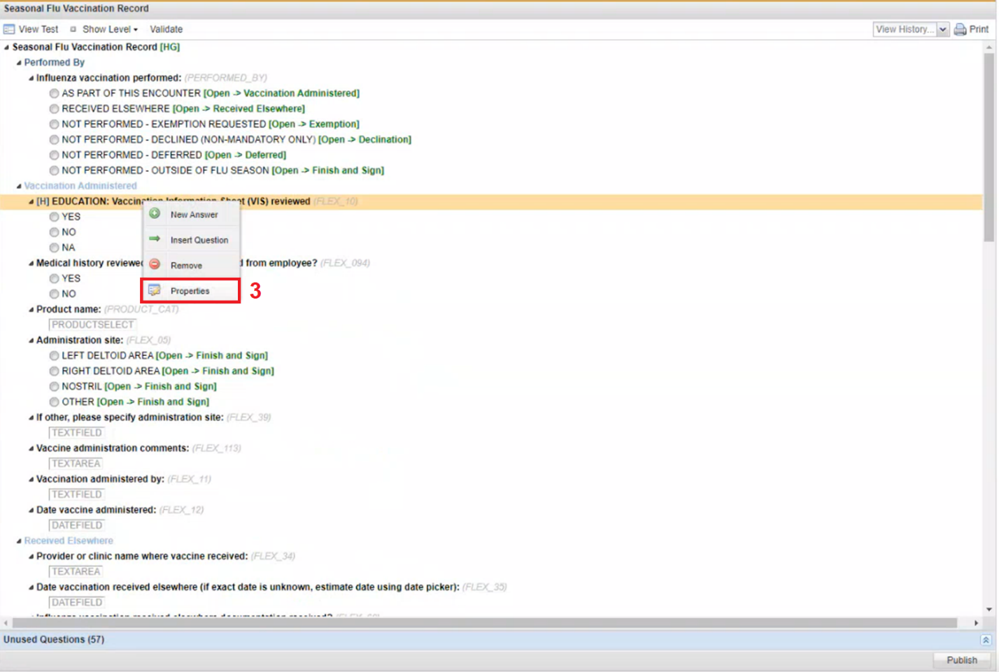

Edits made to an existing Charting Form, for example to a Radiobutton, the editor should ensure that the new answer is populating by getting the form charted to a person to test the published Charting form.
To Edit an Existing Form
Click the Client Configtab.
On the Left Navigation tab, click on the wrench icon in front of a form. The Form displays to the left.

Right click a question on the form, and then click Properties. The Question Properties window appears.
All textbox sections that are not greyed out can be edited.